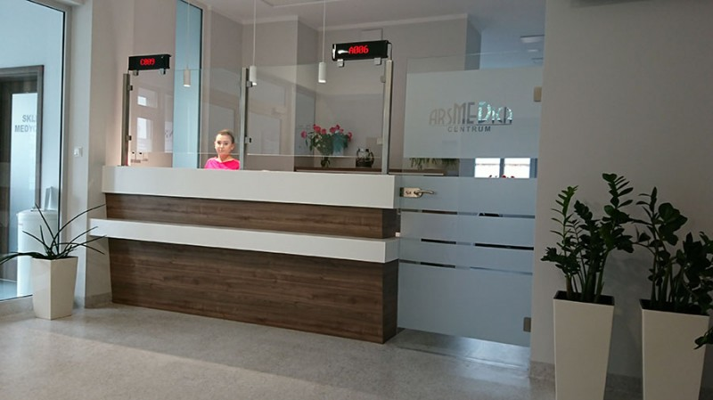

Dziś w przychodni
Stały plan tygodnia · poniedziałek–piątek
Poradnia POZ · pn.–pt.
8:00–18:00W ramach umowy z NFZ
Do potwierdzenia: godziny POZ. Stopka źródła podaje też 7:30–18:00.
Wyniki: następnego dnia od 14:00. Dni i sposób odbioru do potwierdzenia.
Kto przyjmuje w tygodniu?
Grafik POZ. Termin wizyty ustal w rejestracji.
Pełny grafik lekarzy i zespołuLaboratorium
Pobieranie krwi odbywa się od poniedziałku do piątku, 7:30–11:00.
Punkt pobrań przy ul. Babina 3. Możesz wykonać również badania płatne.
Przed badaniem zapytaj o skierowanie, cenę i przygotowanie — także o bycie na czczo.
Sprawdź badania i odbiór wynikówSzczepienia
Szczegóły kalendarza szczepień uzyskasz w punkcie szczepień.
Dla siebie lub dziecka. Zapytaj punkt szczepień o kalendarz, dostępne szczepionki i termin.
Do potwierdzenia: kalendarz: treść wskazuje 2026, a tytuł źródła 2025.
Szczepienia i zapisyKontakt i dojazd
ul. Babina 362-800 KaliszZadzwoń do rejestracji
62 580 22 52Dojazd i pozostałe telefony
Pozostałe sprawy
Po godzinach i w święta
Wojewódzki Szpital Zespolony, ul. Poznańska 79 w Kaliszu, budynek Pogotowia.
62 765 16 54Teleplatforma Pierwszego Kontaktu (TPK)
Przy nagłym pogorszeniu zdrowia poza godzinami POZ źródło podaje bezpłatny numer TPK:
800 137 200Poniedziałek–piątek: 18:00–8:00 następnego dnia. W weekendy, święta i inne dni ustawowo wolne od pracy: całodobowo.

Twoja przychodnia
przy Babina 3
Lekarz rodzinny, internista i pediatra. W jednym miejscu także gabinet zabiegowy, punkt pobrań i prywatni specjaliści.
Godziny wszystkich usług